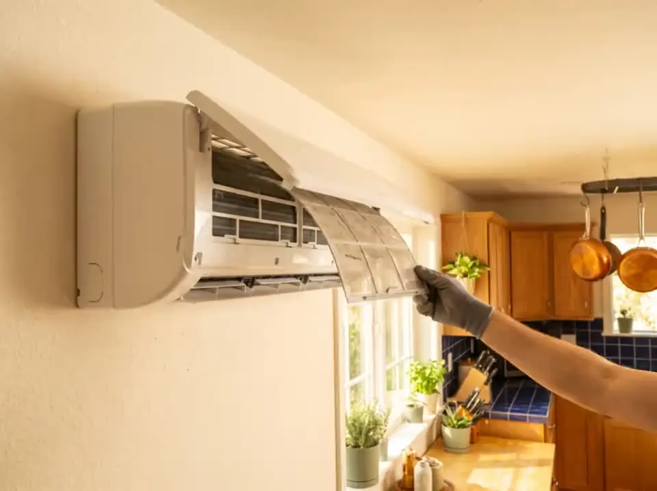

- Inicio
- Aire acondicionado
Servicio técnico Whirlpool en Valladolid
Reparación de aire acondicionado Whirlpool en Valladolid
No enfría, gotea, huele mal o no responde al mando: te confirmamos la franja al llamar, presupuesto por escrito en tu casa y 6 meses de garantía.
- Técnicos con certificado de manipulación de gases fluorados
- 60,50 € IVA incl. · descontable si reparas
- 6 meses de garantía por escrito
Seguridad primero. Nuestra autocomprobación no incluye abrir la unidad interior ni la exterior ni tocar el circuito de refrigerante: solo limpiar los filtros de la tapa frontal. Cualquier intervención en el gas fluorado la hace únicamente un técnico con certificado (RD 115/2017). Si ves hielo fuera de lo normal, un líquido aceitoso goteando o hueles a quemado, apágalo por el diferencial y no lo enciendas hasta la visita.
Síntomas
Qué le pasa a tu aire acondicionado
Toca el síntoma: te decimos qué suele ser, sin precio por avería (el presupuesto es por escrito y en tu casa).
Contarlo por WhatsApp →
Contarlo por WhatsApp →
Contarlo por WhatsApp →
Contarlo por WhatsApp →
Contarlo por WhatsApp →
Contarlo por WhatsApp →
Códigos
Por síntomas, no por códigos
Los códigos E1–E5 de aire acondicionado Whirlpool que circulan en internet son de equipos inverter de Latinoamérica, no verificados para los SPIW europeos: no los publicamos. Trabajamos por síntoma y nunca te pediremos abrir el aparato.
Qué suele ser cada síntoma
- No enfría / no calientaLimpia los filtros primero. Si sigue igual, puede faltar gas: solo lo carga un técnico con carné, nosotros.
- Gotea dentro de casaCae agua de la unidad interior. Casi siempre es el desagüe atascado: se limpia y suele ser barato.
- Huele malOlor a humedad al encender. Limpia los filtros; si sigue, la limpiamos por dentro y queda resuelto.
- Hace ruido la unidad exteriorLa máquina de fuera vibra o zumba. Suele ser el ventilador o suciedad; te decimos en casa si compensa.
- El mando no respondeCambia las pilas primero. Si sigue, la unidad no recibe la señal: pieza económica.
- Se apaga solo / parpadeaSe protege de algún fallo y avisa con el piloto. Cuenta los parpadeos y dínoslo: así vamos con la pieza.
Series y tecnologías
Lo que reparamos en equipos de aire acondicionado Whirlpool
- SPIW split inverter (309–324)Aire de pared. Limpia los filtros tú mismo; para lo demás, dinos el modelo de la unidad de dentro.
- FM · WA multisplitVarias unidades dentro con una sola fuera. Si falla solo una, suele ser una pieza pequeña de esa unidad.
- PortátilesSin instalación. Vacía el depósito y limpia el filtro antes de llamar: es casi siempre eso.
- Deshumidificador DE20Quita la humedad de casa. Si se para, vacía el depósito y limpia el filtro; suele bastar.
Dónde está la etiqueta de tu aire acondicionado
Etiqueta en el lateral de la unidad interior, visible al levantar la tapa frontal sin herramientas (sin tocar filtros ni circuito). Mándanos una foto por WhatsApp.
Mandar foto por WhatsAppCuánto cuesta
- 60,50 € IVA incl. la visita y el diagnóstico
- Se descuenta si reparas
- Presupuesto por escrito antes de tocar nada
- 6 meses de garantía
¿Compensa arreglarla o comprar otra?
- Si la reparación supera la mitad del precio de un aparato nuevo, te lo decimos.
- Si tu Whirlpool tiene más de 10 años, te lo decimos.
- Si es una avería de placa electrónica con piezas caras, te lo decimos en casa — y no te cobramos más que la visita.
Equipos de más de 10–12 años con fuga de refrigerante y compresor: te lo decimos en tu casa antes de recargar nada.
¿Y cuánto vale uno nuevo?
Preguntas sobre equipos de aire acondicionado Whirlpool
¿Podéis recargar el gas refrigerante?
¿Por qué gotea agua dentro de casa?
¿Por qué no hay códigos de error del aire?
¿Menos de 3 años?
Llámanos o escríbenos
Llama o escribe por WhatsApp
L–V 8:00–20:00 · S 9:00–14:00 · te confirmamos la franja al llamar
Fuera de horario, escríbenos por WhatsApp y te contestamos al abrir. Si tienes una foto de la etiqueta número de modelo o del error, mándala en el chat: llegamos con la pieza correcta.